Prometeo En desarrollo temprano
Un asistente de voz que corre entero en tu máquina.
- Año
- 2025 — hoy
- Rol
- Diseño y desarrollo
- Superficie
- 7 modos
- Servidores MCP
- 6
- Estado
- Activo

Asistente personal completo —wake word, voz, memoria y herramientas— sin una sola llamada a un servicio de pago. El modelo es Ollama en local, la transcripción es Whisper, la voz es Piper y la memoria vive en ChromaDB sobre disco. Nada sale de la máquina y no hay telemetría.
Por encima del modelo hay un sistema multi-agente que descompone la petición (Planner), la ejecuta (Executor) y valida el resultado (Critic), con reintentos cuando la calidad no da la talla.
- Python
- Ollama
- Whisper
- ChromaDB
- Piper TTS
- aiohttp
- MCP
- Docker
- TRELLIS
- Three.js
- Oracle Cloud
- Multi-agentePlanner · Executor · Critic con bucle de reintento por calidad.
- RAG con aprendizaje continuoy feedback loop sobre SQLite + ChromaDB.
- 6 servidores MCPfilesystem, git, base de datos, memoria, búsqueda y seguridad.
- Generación 3D paramétricacon exportación STL validada para impresión.
- Malla 3D a partir de imágenesTRELLIS en contenedor, alimentado con tres vistas ortogonales en vez de una. El experimento controlado contra la vista única salió más rápido y con mejor fidelidad de grosor.
- Sandbox propio para el código que escribe el modelodos niveles reales —contenedor sin red ni disco, o proceso acotado por job object— y el resultado declara siempre cuál de los dos corrió.
- WhatsAppcon texto y notas de voz, sesión persistente vía Baileys.
- AES-256-GCMrate limiting, sanitización de entradas y auditoría de acciones.
- Grafo de conocimiento propio14.889 nodos que enlazan las notas del segundo cerebro con el código de siete proyectos, navegable en 3D desde la propia interfaz.
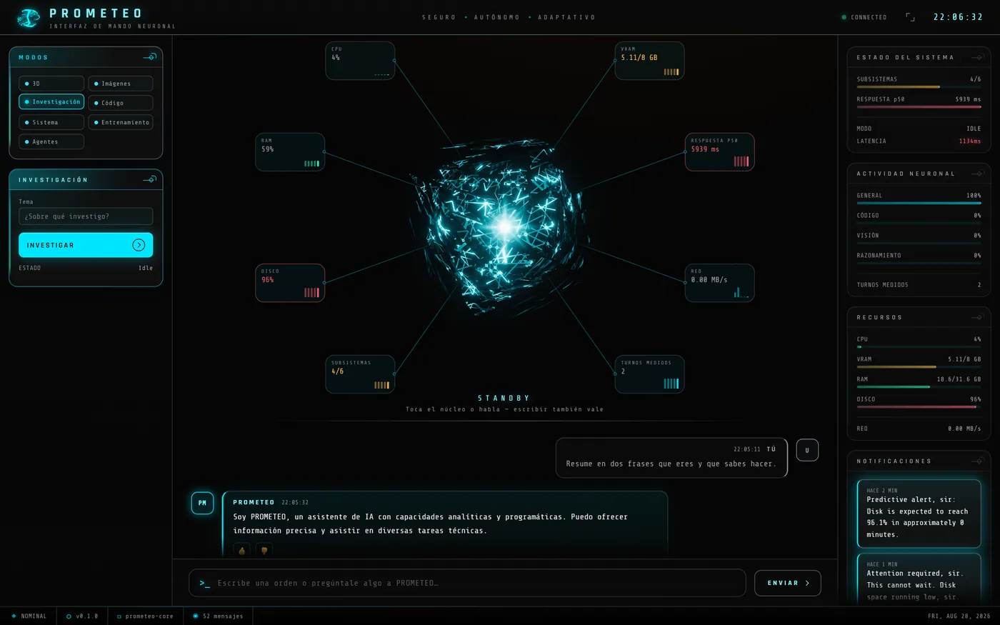

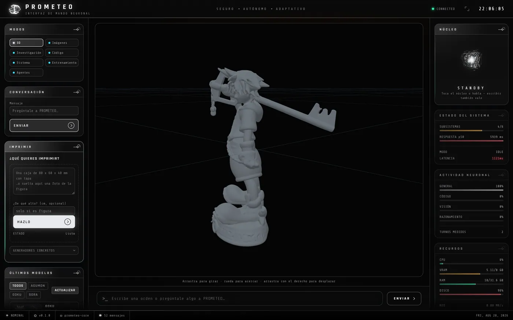
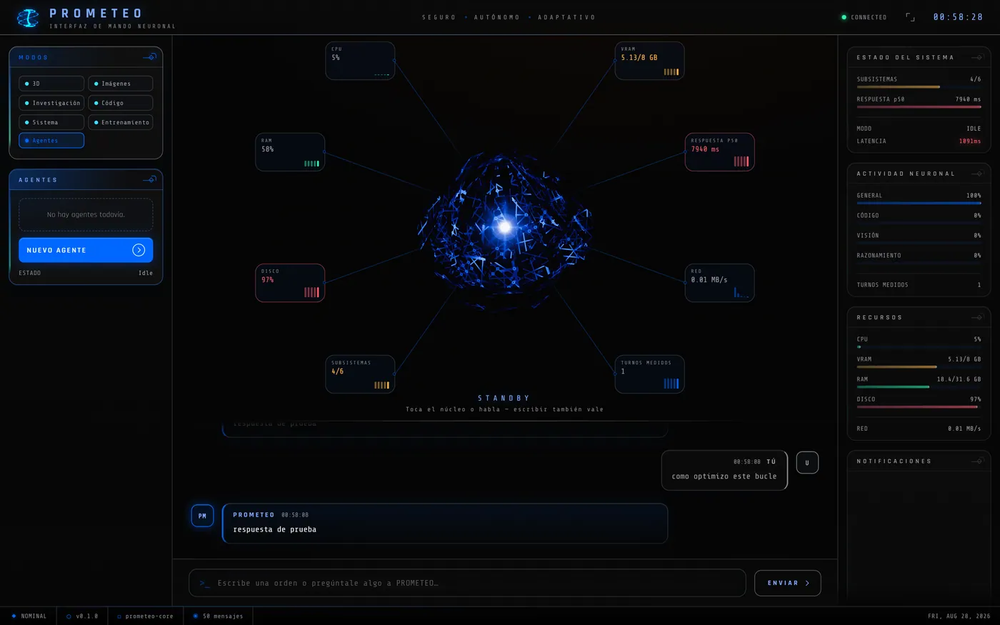
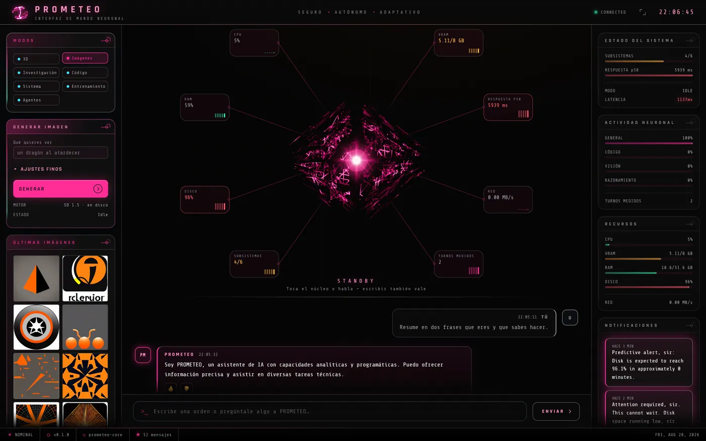
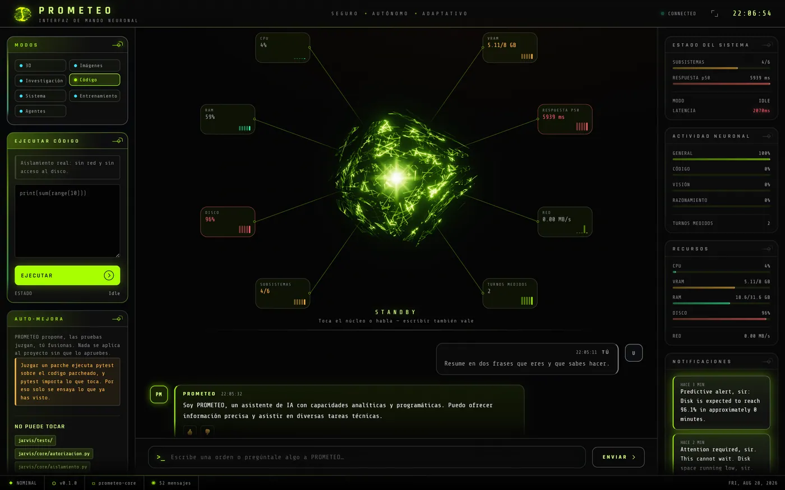
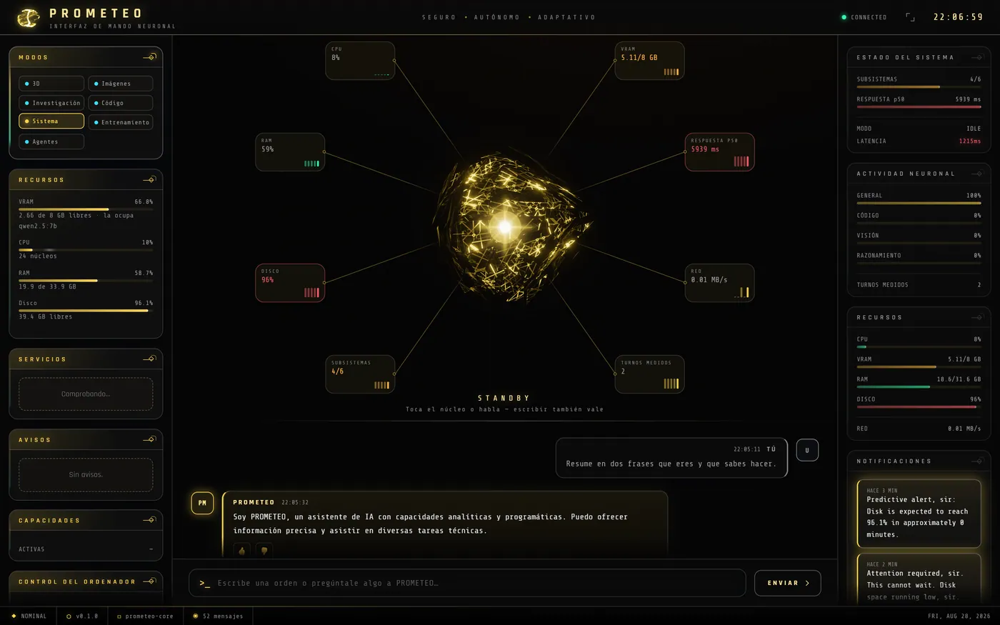
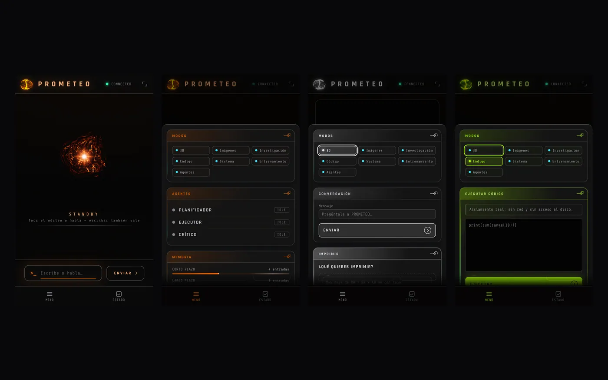
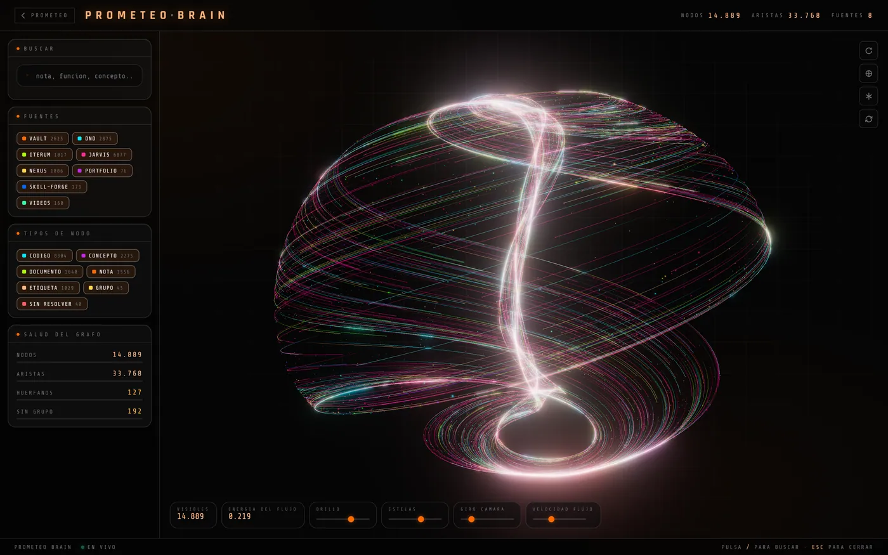
Nexus
Un equipo de agentes especializados trabajando sobre tus repos.
- Año
- 2025
- Rol
- Arquitectura y desarrollo
- Agentes
- 5 roles
- Tests
- 261 + 13 E2E
- Estado
- Estable

Plataforma de desarrollo multi-agente: un orquestador que lanza agentes especializados —Architect, Frontend, Backend, AI/QA y Runner— contra un proyecto real, con memoria RAG compartida y un plano de control en React.
Todos los agentes comparten un mismo ciclo de vida: instanciar, consultar la memoria, ejecutar, registrar la decisión y cerrar la tarea. Eso mantiene el comportamiento predecible por mucho que crezca el catálogo de agentes.
- Node 20
- Express
- MongoDB
- ChromaDB
- React 18
- Vite
- Three.js
- JWT
- Docker
- OpenRouter
- Memoria RAGen ChromaDB con embeddings de Ollama, compartida entre agentes.
- Autenticación en tres modosabierta, API key o JWT con refresh rotativo y revocación.
- 261 testsunitarios y de integración en 30 ficheros, más 13 escenarios E2E.
- Backups EJSONcon restore en modo replace, skip o merge y snapshot de seguridad previo.
- Fine-tuningcaptura automática de respuestas de alta confianza y pipeline LoRA sobre Qwen2.5.
- Doble proveedorOpenRouter con throttling de capa gratuita y Ollama como respaldo.
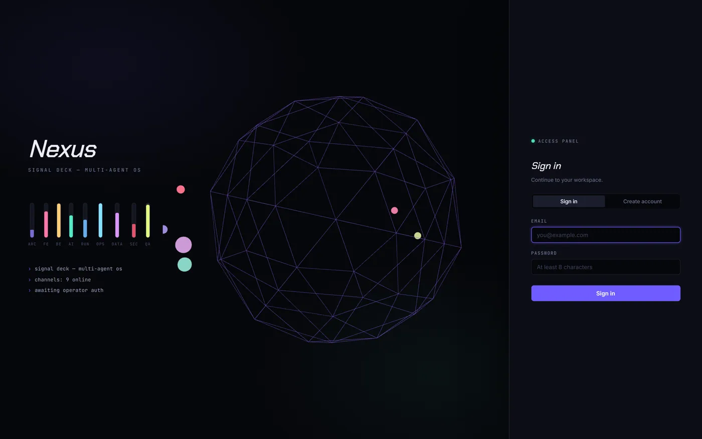
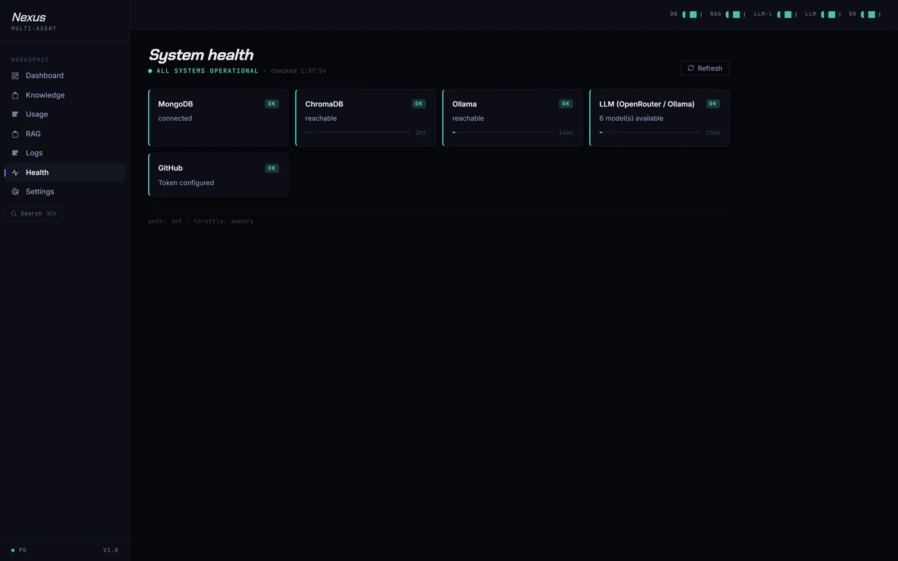
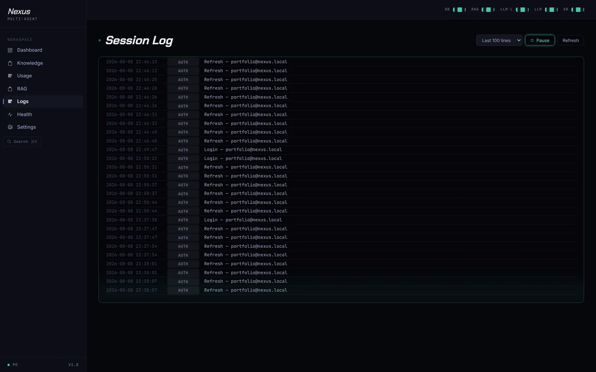
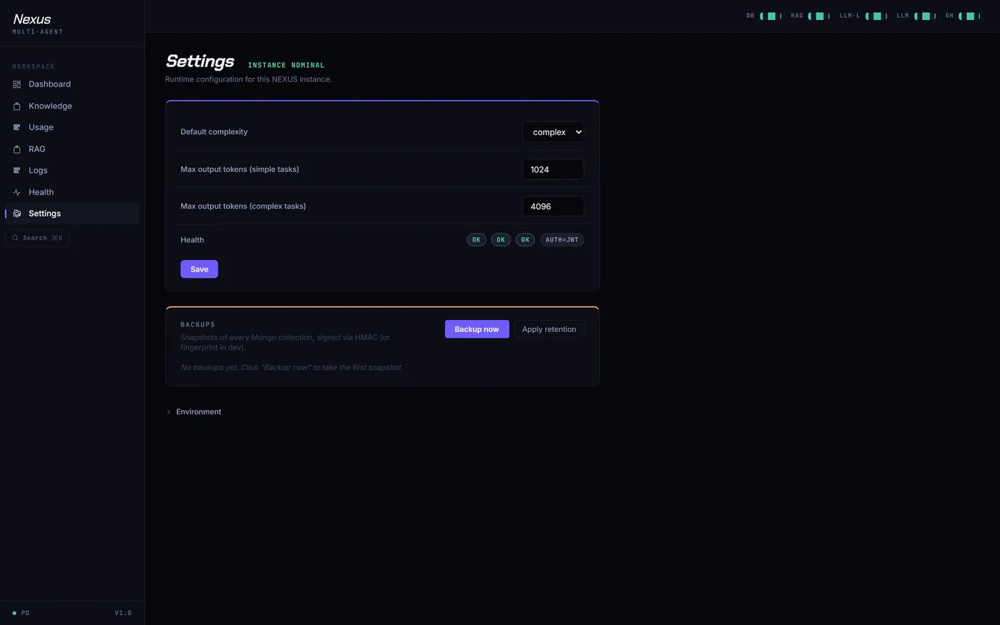
Iterum
Del PDF del cliente a un plan de proyecto completo.
- Año
- 2025 — 2026
- Rol
- Proyecto de fin de grado
- Superficies
- App + portal
- Roles
- 3 (RBAC)
- Estado
- En entrega

Sistema de gestión de proyectos para equipos pequeños de desarrollo, y el proyecto de fin de grado. El administrador sube el PDF o DOCX que le manda el cliente y un LLM lo convierte en tareas, análisis DAFO, hitos y resumen ejecutivo.
Las fechas no se inventan: las tareas se ordenan topológicamente según sus dependencias y de ahí salen las estimaciones. Un cron diario detecta los retrasos, propaga el desplazamiento por el grafo y marca el proyecto en riesgo si alguna tarea se pasa de la fecha de entrega.
- React Native Windows
- React
- Vite
- Tailwind
- Express
- MongoDB
- JWT + RBAC
- node-cron
- Generación por IAdesde PDF/DOCX — tareas, DAFO, hitos y resumen ejecutivo.
- Orden topológicode dependencias para calcular las fechas de cada tarea.
- Scheduler diarioque detecta retrasos y los propaga por el grafo de dependencias.
- Acceso de cliente por QRcon código de 6 caracteres sin caracteres ambiguos.
- RBAC en tres rolesadmin, empleado y cliente, con JWT de 7 días.
- App de escritorio nativaen React Native for Windows, más portal web del cliente.

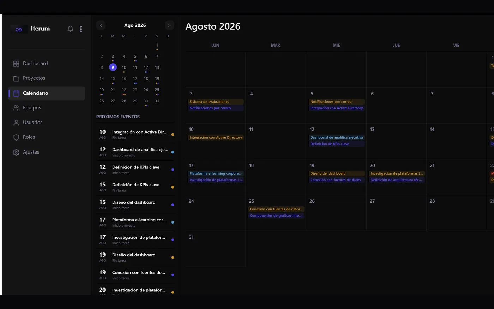
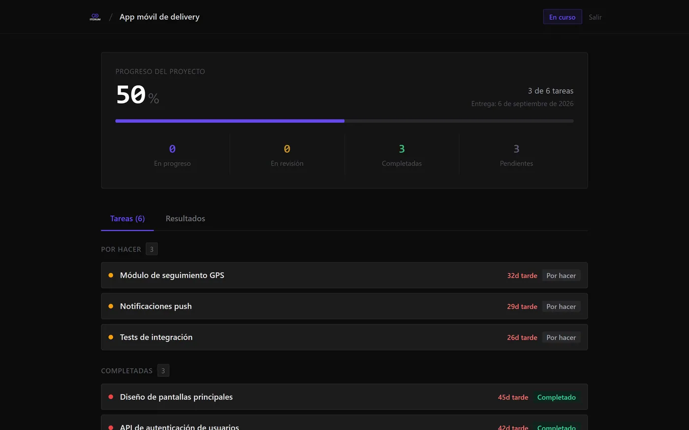
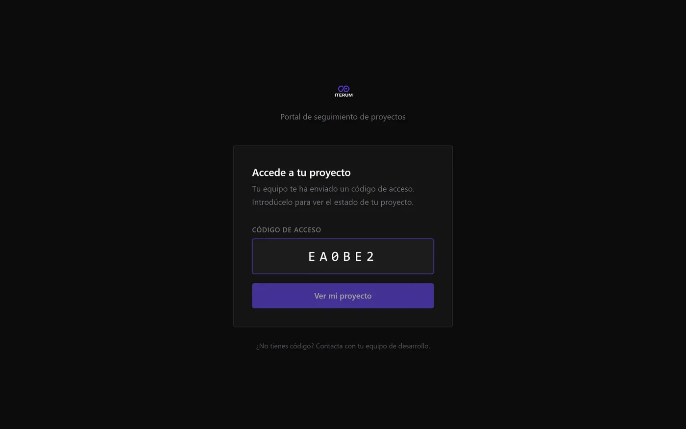
Mesa de D&D En desarrollo temprano
Una mesa de rol entera en red local. Sin cuentas, sin cuotas.
- Año
- 2025 — hoy
- Rol
- Diseño y desarrollo
- Red
- LAN hoy
- Salidas
- SVG jugable
- Estado
- Piloto con jugadores

Herramienta de mesa para D&D 5e pensada para una partida concreta en red local: hojas de personaje sincronizadas, tablero táctico, jukebox de ambiente y dos generadores con IA. Todo local — sin cuentas, sin nube, sin telemetría.
Los mapas no son imágenes generadas: son SVG dibujados por el propio código a partir de un guion estructurado que produce el modelo. El criterio de diseño es que gane la lectura táctica — la rejilla queda de fondo, el suelo jugable destaca y la decoración nunca tapa el nombre de la sala ni las fichas.
Que hoy sea local es una decisión, no un límite. La primera prueba de verdad es mi propia partida, con los jugadores alrededor de la mesa, y esa restricción es la que fija el listón: cero fricción para entrar y latencia de red local. Si el piloto aguanta, el siguiente paso es una versión hospedada para mesas de fuera.
- Next.js 14
- TypeScript
- SQLite
- WebSocket
- Ollama
- Qwen2.5-VL
- Framer Motion
- Playwright
- Tablero tácticocon niebla de guerra, iniciativa y plantillas de área.
- Generación procedural de mazmorraspor reparto BSP, renderizadas en SVG.
- Visión por modeloextrae un mapa jugable desde la foto de un manual.
- RAG sobre los manuales oficialespara mantener la continuidad de la campaña.
- Sincronía en tiempo realpor WebSocket entre máster, jugadores y pantalla compartida.
- Pantalla compartida por QRpara el tablet que va en el centro de la mesa.
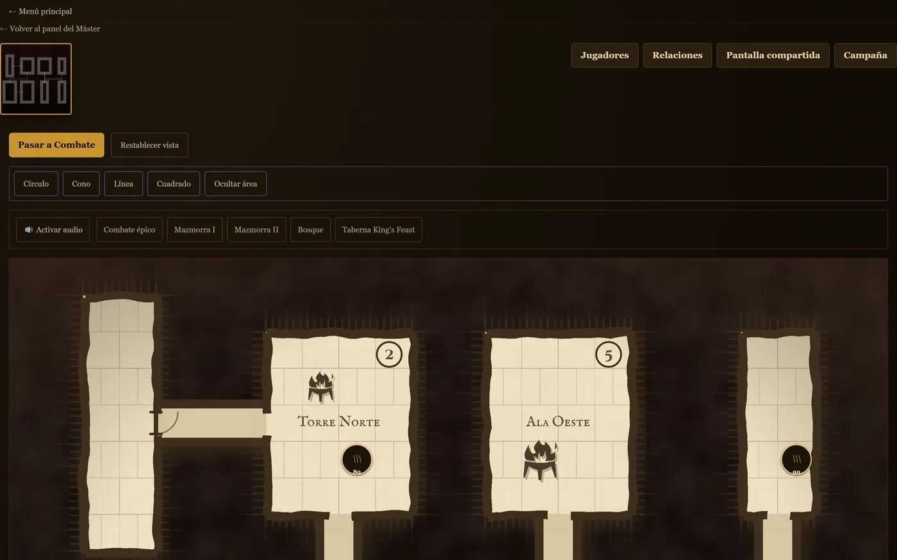
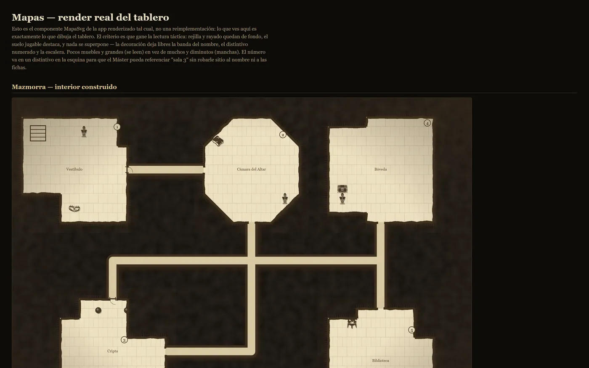
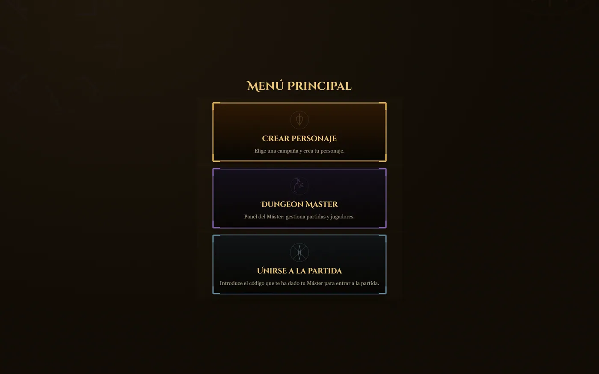
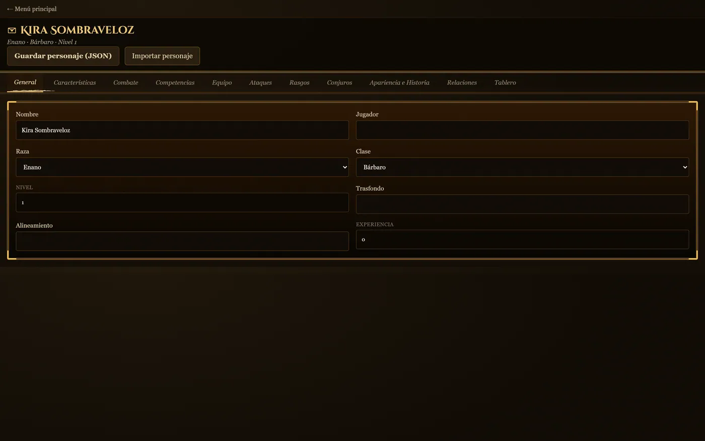
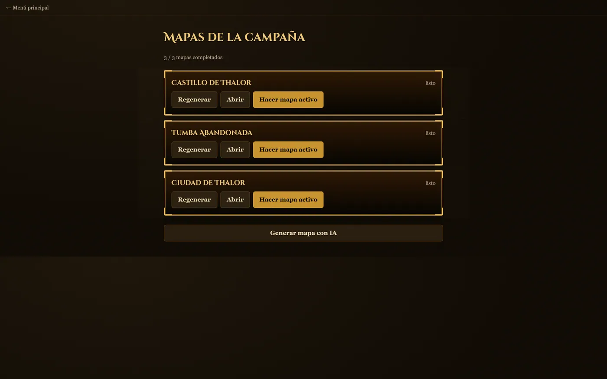
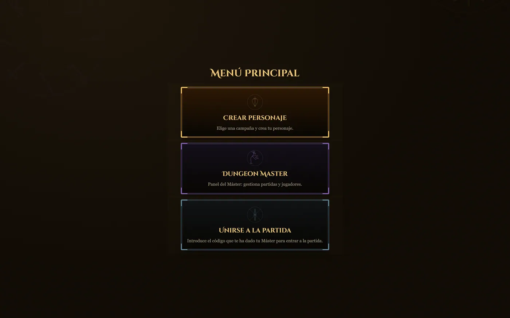
Sobre mí
IA y sistemas de agentes
Un modelo no es una caja negra a la que se le pide texto. El trabajo de verdad está en lo que va alrededor: repartir la tarea entre agentes, darles memoria, medir si lo que devuelven vale y acotar lo que pueden tocar.
- Orquestación multi-agenteReparto por roles con un ciclo de vida común —instanciar, consultar la memoria, ejecutar, registrar la decisión y cerrar—, con validación del resultado y reintento cuando la calidad no da la talla.
- RAG y memoriaBases vectoriales con embeddings locales, memoria compartida entre agentes y bucle de realimentación para que lo aprendido vuelva a entrar en las respuestas siguientes.
- Modelos corriendo en localLenguaje, transcripción, voz, visión e imagen en la propia máquina, sin llamadas a servicios de pago y sin que los datos salgan de ella.
- Fine-tuningCaptura automática de los ejemplos de alta confianza y pipeline LoRA, con partición held-out para distinguir si el modelo mejora o sólo está memorizando.
- MCPServidores propios que dan a un modelo acceso controlado a ficheros, git, base de datos, memoria y búsqueda, en vez de barra libre.
- Ejecución acotadaEl código que escribe un modelo corre aislado, y el resultado declara siempre bajo qué nivel de aislamiento corrió en lugar de prometer uno que no tiene.
- n8nAutomatización de flujos: disparadores, encadenado de servicios y pasos con lógica propia. Es la herramienta a la que voy cuando el problema es conectar sistemas, no escribir un agente desde cero.
Formación
- Grado en Ingeniería de Software
- U-tad · Centro Universitario de Tecnología y Arte Digital
- 2022 — 2026
- High School, sophomore year
- Jenks High School · Tulsa, Oklahoma
- 2018 — 2019
Otros proyectos
- Robot de acompañamiento hospitalario
- Gestión de equipos, diseño del robot, desarrollo de IA y ensamblado.
- Diciembre 2025 — actualidad
- Plataforma educativa de turismo local
- Proyecto en grupo: reconocimiento fotográfico y recompensas virtuales, con foco en dirección de proyectos.
- Septiembre — Diciembre 2024
Lenguajes y plataformas
- Python
- C
- C#
- C++
- Java
- JavaScript
- Next.js
- SQL
- HTML
- CSS
- n8n
- AWS
- Linux
Idiomas
- Español — nativo
- Inglés — C1
Cómo trabajo
- Trabajo en equipo y liderazgo en grupos multidisciplinares.
- Resolución de problemas y aprendizaje rápido.
- Adaptabilidad y facilidad comunicativa.